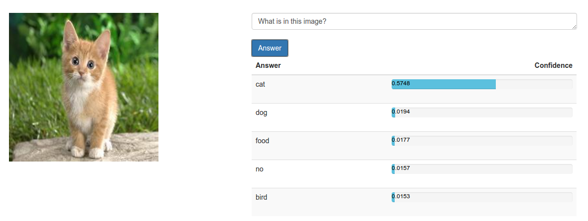

17th - 24th Nov'15
VQA Adversaries
Study effects of adversarial perturbations on the VQA Model
The adversarial examples created by fooling the CaffeNet (caffe-example) model seem to be beating the VQA model too as expected. However, the type of responses depend quite a bit on the type of question posed as we can see from the samples results below.
Fooling Image of Dog transformed to a cat prediction : VQA Fails
There is however some anamoly with particular class answers from the VQA (jersey/t-shirt for example)
Non-perturbed cat image.

Fail! Even with this non-perturbed cat image, the VQA answrs for a +ve on the presence of a wig in the image. However, the response depends on the way the question is posed.

Perturbed cat image transformed to show +ve for class of t-shirts/jersey : VQA fails
Depending on the way the question is posed, the presence of a jersey is either +ve or -ve as in these two cases. What's strange is that the VQA did not classify this image as a t-shirt/jersey while my bvlc-caffenet did!? The idea of fooling images not being a result of poor regularization somehow is not valid over the VQA?